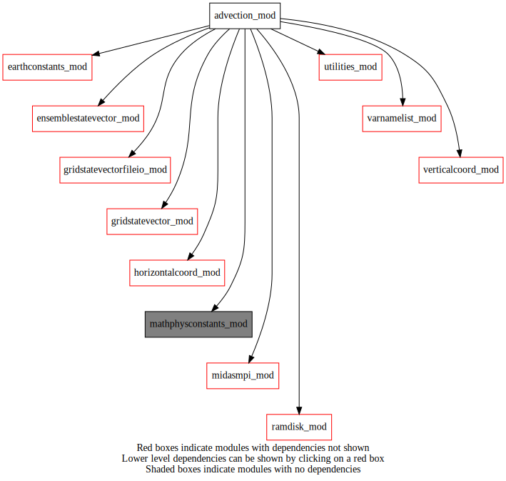
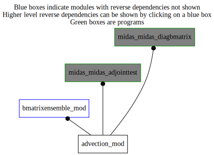

Dependency Diagrams:
 Direct Dependency Diagram¶
 Reverse Dependency Diagram¶
Description
MODULE advection_mod (prefix=”adv” category=’4. Data Object transformations’)
- Purpose
To perform forward and/or backward advection (based on semi-lagrangian trajectories) for both gridStateVector and ensemble of gridStateVectors
Quick access
- Variables
- Routines
adv_ensemble_ad(),adv_ensemble_tl(),adv_ensemble_tl_r4(),adv_ensemble_tl_r8(),adv_setup(),adv_statevector_ad(),adv_statevector_tl(),calctrajectory(),calcweights(),processsteeringflow()Needed modules
ramdisk_mod: MODULE ramDisk_mod (prefix=’ram’ category=’8. Low-level utilities and constants’)
midasmpi_mod: MODULE midasMpi_mod (prefix=’mmpi’ category=’8. Low-level utilities and constants’)
mathphysconstants_mod: MODULE MathPhysConstants_mod (prefix=’mpc’ category=’8. Low-level utilities and constants’)
earthconstants_mod: MODULE earthConstants_mod (prefix=’ec’ category=’8. Low-level utilities and constants’) Prefixes: ec_ (Earth constants), for miscellaneous values from diverse sources
ensemblestatevector_mod: MODULE ensembleStateVector_mod (prefix=’ens’ category=’6. High-level data objects’)
gridstatevector_mod: MODULE gridStateVector_mod (prefix=’gsv’ category=’6. High-level data objects’)
gridstatevectorfileio_mod: MODULE gridStateVectorFile_mod (prefix=’gio’ category=’4. Data Object transformations’)
horizontalcoord_mod: MODULE HorizontalCoord_mod (prefix=’hco’ category=’7. Low-level data objects’)
verticalcoord_mod: MODULE verticalcoord (prefix=’vco’ category=’7. Low-level data objects’)
utilities_mod: MODULE utilities_mod (prefix=’utl’ category=’8. Low-level utilities and constants’)
varnamelist_mod: MODULE varNameList (prefix=’vnl’ category=’7. Low-level data objects’)Types
- type advection_mod/unknown_type¶
- Type fields
% interpweight_bl (*,*,*) [real ,allocatable]
% interpweight_br (*,*,*) [real ,allocatable]
% interpweight_tl (*,*,*) [real ,allocatable]
% interpweight_tr (*,*,*) [real ,allocatable]
% latindex (*,*,*) [integer ,allocatable]
% lonindex (*,*,*) [integer ,allocatable]
- type advection_mod/unknown_type
- Type fields
% levtype (*) [struct_adv_levtype ,allocatable]
- type advection_mod/unknown_type
Variables
- advection_mod/struct_adv [public]¶
Subroutines and functions
- subroutine advection_mod/adv_setup(adv, mode, hco_in, vco_in, numstepadvectedfield, datestamplistadvectedfield, numstepsteeringflow_in, steeringflowdelthour, steeringflowfactor_in, levtypelist[, steeringflowfilename_opt[, statevector_steeringflow_opt]])¶
- Arguments
adv [struct_adv ]
mode [character ,in]
hco_in [struct_hco ,pointer]
vco_in [struct_vco ,pointer]
numstepadvectedfield [integer ,in,]
datestamplistadvectedfield (numstepadvectedfield) [integer ,in]
numstepsteeringflow_in [integer ,in]
steeringflowdelthour [real ,in]
steeringflowfactor_in (vco_in%nlev_m) [real ,in]
levtypelist [character ,in]
- Options
steeringflowfilename_opt [character ,in,]
statevector_steeringflow_opt [struct_gsv ]
- Called from
- Call to
utl_abort(),mmpi_setup_latbands(),mmpi_setup_lonbands(),gsv_allocate(),ram_fullworkingpath(),gio_readfromfile(),processsteeringflow(),calctrajectory(),calcweights(),gsv_deallocate()
- subroutine advection_mod/processsteeringflow(levtypeindex, levindex, uu_steeringflow_mpiglobaltiles, vv_steeringflow_mpiglobaltiles, nlev_m, nlev_t, mylatbeg, mylatend)¶
- Arguments
levtypeindex [integer ,in]
levindex [integer ,in]
uu_steeringflow_mpiglobaltiles (*,*,*,*) [real ]
vv_steeringflow_mpiglobaltiles (*,*,*,*) [real ]
nlev_m [integer ,in]
nlev_t [integer ,in]
mylatbeg [integer ,in]
mylatend [integer ,in]
- Called from
- Call to
- subroutine advection_mod/calctrajectory(xpos_r4, ypos_r4, latindex0, lonindex0, levindex, stepindexsf_start, stepindexsf_end)¶
- Arguments
xpos_r4 [real ,out]
ypos_r4 [real ,out]
latindex0 [integer ,in]
lonindex0 [integer ,in]
levindex [integer ,in]
stepindexsf_start [integer ,in]
stepindexsf_end [integer ,in]
- Called from
- Call to
- subroutine advection_mod/calcweights(lonindex, latindex, interpweight_bl, interpweight_br, interpweight_tl, interpweight_tr, xpos_r4, ypos_r4)¶
- Arguments
lonindex [integer ,out]
latindex [integer ,out]
interpweight_bl [real ,out]
interpweight_br [real ,out]
interpweight_tl [real ,out]
interpweight_tr [real ,out]
xpos_r4 [real ,in]
ypos_r4 [real ,in]
- Called from
- Call to
- subroutine advection_mod/adv_ensemble_tl(ens, adv, nens)¶
- Arguments
ens [struct_ens ]
adv [struct_adv ]
nens [integer ,in]
- Called from
ben_setuponeinstance(),ben_bsqrt(),midas_adjointtest,midas_diagbmatrix- Call to
ens_getnumlev(),utl_abort(),ens_getdatakind(),adv_ensemble_tl_r8(),adv_ensemble_tl_r4()
- subroutine advection_mod/adv_ensemble_tl_r8(ens, adv, nens)¶
- Arguments
ens [struct_ens ]
adv [struct_adv ]
nens [integer ,in]
- Called from
- Call to
ens_getnumk(),ens_getlevfromk(),ens_getvarnamefromk(),vnl_varlevelfromvarname(),ens_getonelev_r8()
- subroutine advection_mod/adv_ensemble_tl_r4(ens, adv, nens)¶
- Arguments
ens [struct_ens ]
adv [struct_adv ]
nens [integer ,in]
- Called from
- Call to
ens_getnumk(),ens_getlevfromk(),ens_getvarnamefromk(),vnl_varlevelfromvarname(),ens_getonelev_r4()
- subroutine advection_mod/adv_ensemble_ad(ens, adv, nens)¶
- Arguments
ens [struct_ens ]
adv [struct_adv ]
nens [integer ,in]
- Called from
- Call to
utl_abort(),ens_getdatakind(),ens_getnumlev(),ens_getnumk(),ens_getlevfromk(),ens_getvarnamefromk(),vnl_varlevelfromvarname(),ens_getonelev_r8()
- subroutine advection_mod/adv_statevector_tl(statevector, adv)¶
- Arguments
statevector [struct_gsv ]
adv [struct_adv ]
- Called from
- Call to
gsv_getdatakind(),utl_abort(),utl_tmg_start(),gsv_getnumk(),gsv_getlevfromk(),gsv_getvarnamefromk(),vnl_varlevelfromvarname(),utl_tmg_stop()
- subroutine advection_mod/adv_statevector_ad(statevector, adv)¶
- Arguments
statevector [struct_gsv ]
adv [struct_adv ]
- Called from
- Call to
utl_abort(),gsv_getdatakind(),gsv_getnumk(),gsv_getlevfromk(),gsv_getvarnamefromk(),vnl_varlevelfromvarname()
{kind=link}
{kind=link}